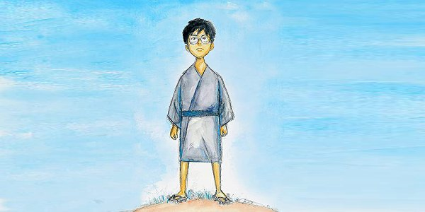

Studio Ghibli Films - A Timeline
-
March 11, 1984
Nausicaä of the Valley of the Wind
Nausicaä, the princess of the Valley of the Wind, explores the jungle and communicates with its creatures, including the gigantic, trilobite-like armored Ohm. She hopes to understand the jungle and find a way for it and humans to co-exist.
-
Aug 2, 1986
Castle in the Sky
A young boy stumbles into a mysterious girl who floats down from the sky. The girl, Sheeta, was chased by pirates, army and government secret agents. In saving her life, they begin a high flying adventure that goes through all sorts of flying machines, eventually searching for Sheeta's identity in a floating castle of a lost civilization.
-
Apr 16, 1988
Grave of the Fireflies
Set in the city of Kobe, Japan, the film tells the story of two siblings, Seita and Setsuko, and their desperate struggle to survive during the final months of the Second World War
-
Apr 16, 1988
My Neighbour Totoro
My Neighbour Totoro follows the story of two young daughters of a professor and their interactions with friendly wood spirits in postwar rural Japan. Two young girls, 10-year-old Satsuki and her 4-year-old sister Mei, move into a house in the country with their father to be closer to their hospitalized mother. Satsuki and Mei discover that the nearby forest is inhabited by magical creatures called Totoros
-
Jul 29, 1989
Kiki's Delivery Service

Kiki, a teenage witch-in-training, has reached the age of 13. According to tradition, all witches of that age must leave home for one year, so that they can learn how to live on their own. Kiki, along with her talking cat Jiji, fly away to live in the seaside town of Koriko. After starting her own delivery service (using her broom as the delivery vehicle), Kiki must learn how to deal with her new life, especially after she loses the power to fly.
-
Jul 20, 1991
Only Yesterday
Put-upon office worker Taeko suddenly recalls how in 1966, when visiting her sister to help harvest the saffron flowers, she fell for a handsome young farmer but turned him down for the lure of the big city. In her daydream, she wonders what life could have been and what he's doing now.
-
July 18, 1992
Porco Russo

In Early 1930's era Italy air pirates, bounty hunters and high fliers of all sorts rule the skies. The most cunning and skilled of these pilots is Porco Rosso. A former Ace, he now makes a living flying contract jobs, such as rescuing those kidnapped by air pirates. Donald Curtis, Porco's rival in the air and in catching the affections of women, provides a constant challenge to the hero, culminating in a hilarious, action packed finale.
-
May 5, 1993
Ocean Waves
Set in Tosa and Kōchi (city) in Shikoku, it concerns a love triangle that develops between two good friends and a new girl who transfers to their high school from Tokyo.
-
Jul 16, 1994
Pom Poko
Tokyo needs space to expand and that means less and less room is available for nature. The Tanukis, a special kind of metamorphosing raccoon, suffer the consequences. There is nowhere to go and more and more territorial fights happen. The old Oroku understands something needs to happen. For once the Tanukis unite and decide on a five year plan. The goal: to sabotage the building projects and scare mankind away. But that isn't easy. To do so the Tanukis need to improve their metamorphic ability to transform into anything. Almost every Tanuki can do it, but it hardly isn't practiced anymore. While Oroku trains the Tanukis, Gonta, a fearsome warrior, isn't so happy. He is shocked by the amount of forest that is gone already and demands immediate action. He wants war.
-
Sept 8, 1995
Whisper of the Heart
14-year-old teenage bookworm Shizuku lives a simple life, dominated by her love for stories and writing. One day she notices that all the library books she has have been previously checked out by the same person: 'Seiji Amasawa'. Curious as to who he is, Shizuku meets a boy of her age whom she finds infuriating, but discovers to her shock that he is her 'Prince of Books'. As she grows closer to him, she realises that he merely read all those books to bring himself closer to her. The boy, Seiji, aspires to be a violin maker in Italy, and it is his dreams that make Shizuku realise that she has no clear path for her life. Knowing that her strength lies in writing, she tests her talents by writing a story about Baron, a cat statuette belonging to Seiji's grandfather.
-
Jul 12, 1997
Princess Mononoke
While protecting his village from rampaging boar-god/demon, a confident young warrior, Ashitaka, is stricken by a deadly curse. To save his life, he must journey to the forests of the west. Once there, he's embroiled in a fierce campaign that humans were waging on the forest. The ambitious Lady Eboshi and her loyal clan use their guns against the gods of the forest and a brave young woman, Princess Mononoke, who was raised by a wolf-god. Ashitaka sees the good in both sides and tries to stem the flood of blood. This is met by animosity by both sides as they each see him as supporting the enemy.
-
Jul 17, 1998
My Neighbors, the Yamadas
The Yamadas are a typical middle class Japanese family in urban Tokyo and this film shows us a variety of episodes of their lives. With tales that range from the humourous to the heartbreaking, we see this family cope with life's little conflicts, problems and joys in their own way.
-
Jul 20, 2001
Spirited Away
Chihiro and her parents are moving to a small Japanese town in the countryside, much to Chihiro's dismay. On the way to their new home, Chihiro's father makes a wrong turn and drives down a lonely one-lane road which dead-ends in front of a tunnel. Her parents decide to stop the car and explore the area. They go through the tunnel and find an abandoned amusement park on the other side, with its own little town. When her parents see a restaurant with great-smelling food but no staff, they decide to eat and pay later. However, Chihiro refuses to eat and decides to explore the theme park a bit more. She meets a boy named Haku who tells her that Chihiro and her parents are in danger, and they must leave immediately. She runs to the restaurant and finds that her parents have turned into pigs. In addition, the theme park turns out to be a town inhabited by demons, spirits, and evil gods. At the center of the town is a bathhouse where these creatures go to relax. The owner of the bathhouse is the evil witch Yubaba, who is intent on keeping all trespassers as captive workers, including Chihiro. Chihiro must rely on Haku to save her parents in hopes of returning to their world.
-
July 20, 2002
The Cat Returns
After helping a cat, a seventeen-year-old girl finds herself involuntarily engaged to a cat Prince in a magical world where her only hope of freedom lies with a dapper cat statuette come to life.
-
Nov 20, 2004
Howl's Moving Castle

A love story between an 18-year-old girl named Sophie, cursed by a witch into an old woman's body, and a magician named Howl. Under the curse, Sophie sets out to seek her fortune, which takes her to Howl's strange moving castle. In the castle, Sophie meets Howl's fire demon, named Karishifâ. Seeing that she is under a curse, the demon makes a deal with Sophie - if she breaks the contract he is under with Howl, then Karushifâ will lift the curse that Sophie is under, and she will return to her 18-year-old age.
-
Apr 15th, 2006
Tales from Earthsea
Tales from Earthsea, is loosely based in the Earthsea mythology.It follows Prince Arren after he mysteriously murders his father and flees his kingdom, happening upon the mage Sparrowhawk only by chance.
-
Jul 19, 2008
Ponyo
The son of a sailor, 5-year-old Sosuke lives a quiet life on an oceanside cliff with his mother Lisa. One fateful day, he finds a beautiful goldfish trapped in a bottle on the beach and upon rescuing her, names her Ponyo. But she is no ordinary goldfish. The daughter of a masterful wizard and a sea goddess, Ponyo uses her father's magic to transform herself into a young girl and quickly falls in love with Sosuke, but the use of such powerful sorcery causes a dangerous imbalance in the world. As the moon steadily draws nearer to the earth and Ponyo's father sends the ocean's mighty waves to find his daughter, the two children embark on an adventure of a lifetime to save the world and fulfill Ponyo's dreams of becoming human.
-
July 17, 2010
Arriety
Based on Mary Norton's juvenile fantasy novel, The Borrowers, the film tells the story of Arrietty, a young Borrower who lives under the floorboards of a typical household. She eventually befriends Sho, a human boy with a heart condition, who is living with Sadako (Sho's great aunt)When Haru (Sadako's maid) becomes suspicious of the floorboard's disturbance, Arrietty and her family must escape detection, even if it means leaving their beloved home.
-
July 16, 2011
From Up on Poppy Hill
A group of Yokohama students fight to save their school's clubhouse from the wrecking ball during preparations for the 1964 Tokyo Olympic Games. While working there, Umi and Shun gradually attract each other, but face a sudden trial. Even so, they keep going without fleeing the difficulties of reality.
-
July 20, 2013
The Wind Rises
Jiro dreams of flying and designing beautiful airplanes, inspired by the famous Italian aeronautical designer Caproni. Nearsighted from a young age and unable to be a pilot, Jiro joins a major Japanese engineering company in 1927 and becomes one of the world's most innovative and accomplished airplane designers. The film chronicles much of his life, depicting key historical events, including the Great Kanto Earthquake of 1923, the Great Depression, the tuberculosis epidemic and Japan's plunge into war. Jiro meets and falls in love with Nahoko, and grows and cherishes his friendship with his colleague Honjo.
-
Nov 23, 2013
The Tale of Princess Kaguya
An old man makes a living by selling bamboo. One day, he finds a princess in a bamboo. The princess is only the size of a finger. Her name is Kaguya. When Kaguya grows up, 5 men from prestigious families propose to her. Kaguya asks the men to find memorable marriage gifts for her, but the 5 men are unable to find what Kaguya wants. Then, the Emperor of Japan proposes to her.
-
July 19, 2014
When Marnie was There

Twelve-year-old Anna believes she sits outside the invisible magic circle to which most people belong, and shuts herself off from everyone around her. Concerned for her health, Anna's foster mother decides to send her to rural Hokkaido to stay in a sleepy town by the sea. There she meets Marnie, an energetic young girl who seems to appear from nowhere. The pair quickly become inseparable.
-
Dec 30, 2020
Earwig and the Witch
This film revolves around 10-year old Earwig, a precocious child who grew up in a unique orphanage where children can practically do things that are always forbidden of them. She was abandoned by her witch mother, but another witch, Bella Yaga, later adopts her. When she is taken to Bella’s home, she finds out that she will serve as an assistant. Hardheaded Earwig agrees to abide by house rules if Bella teaches her how to do magic.
-
To be announced
How do you live?
Follows a 15 year old boy named Junichi Honda, nicknamed Koperu, and his uncle as the youth deals with spiritual growth, poverty, and the overall experience as human beings.